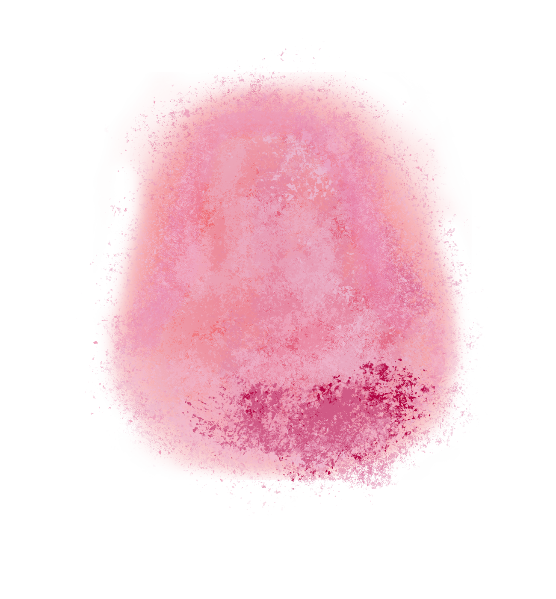
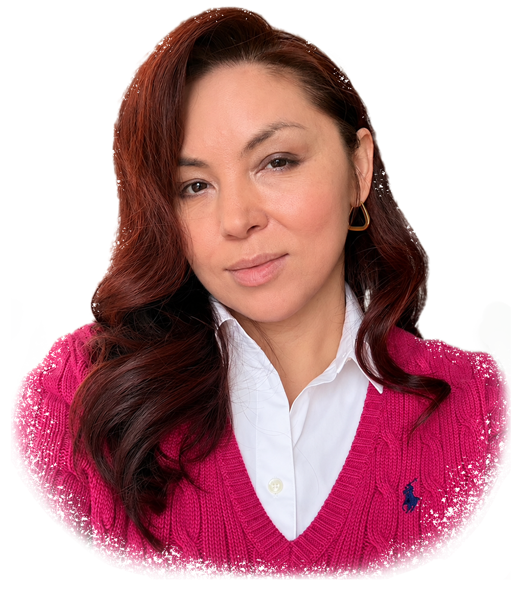
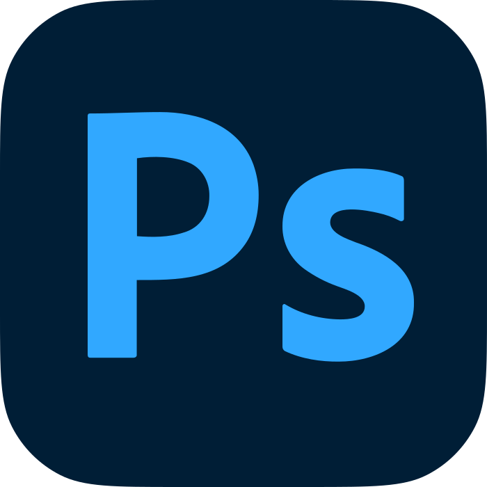
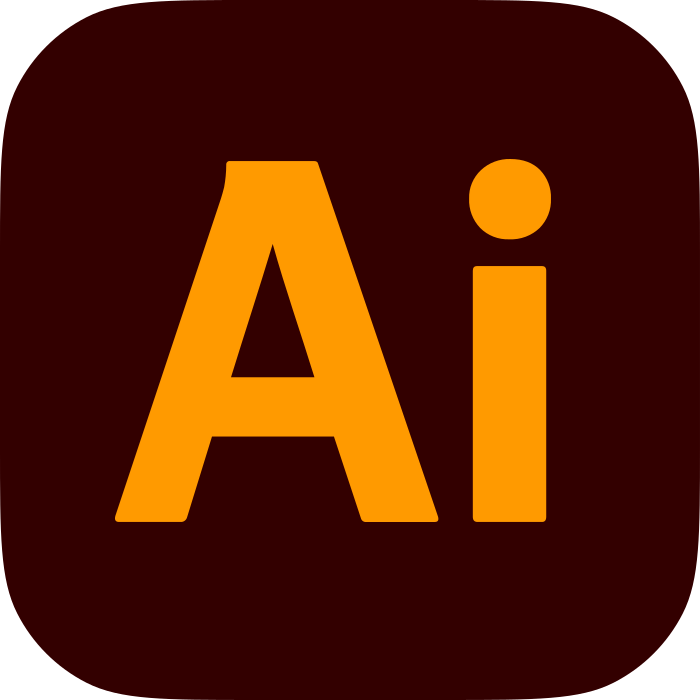
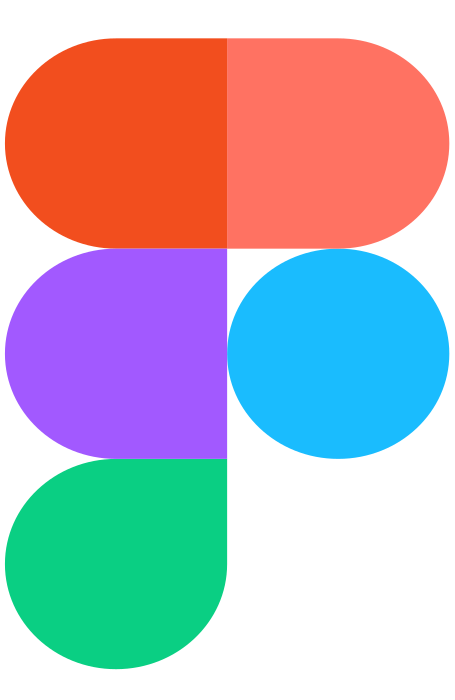

ABOUT ME
私について .
ミレーナ / MILENA
伝えたいことを、丁寧にかたちに。
異なる言葉や文化に触れてきた経験を活かし、一人ひとりの想いや活動の魅力を、わかりやすく伝えるデザインを目指しています。
伝えたいことを、丁寧にかたちに。
日本での歩み
日本で暮らして25年以上になります。神戸と大阪での生活を経て、現在は神戸を拠点に活動しています。神戸の日本語学校で学んだ後、大阪の音楽専門学校で2年間、ボーカルを専攻しました。
音楽と文化活動
音楽を学び、歌や舞台に関わる活動を続けてきました。また、文化交流団体「RODINA」の運営を通じて、子どもたちの教育活動やイベントの企画・運営にも携わってきました。こうした経験が、相手の想いを形にするデザイン制作にもつながっています。
デザインのきっかけ
デザインを始めたきっかけは、自分たちの活動をより多くの人に知ってもらいたいという想いでした。PhotoshopとIllustratorを独学で習得し、公演やイベントのチラシ、パンフレットなどを制作。学校や文化センターの広報に必要な制作物を手がけながら、経験を積んできました。
動画制作
その後、オンライン講座で動画編集を学び、Premiere Proを使った紹介動画や公演の記録映像の制作にも取り組むようになりました。複数のカメラで撮影した映像を組み合わせるマルチカメラ編集にも対応しています。
Webデザインへの挑戦
さらに、Webデザインを基礎から体系的に学ぶため、職業訓練を受講。Photoshop、Illustrator、Figmaに加え、HTML・CSSによるコーディングやWordPressでのサイト制作を学びました。現在もオンライン講座などを通じて制作スキルを磨き、JavaScriptの学習を続けています。
大切にしていること
教育や文化活動を通じて培ってきたのは、相手の立場に立ち、わかりやすく伝える姿勢です。異なる言葉や文化に触れてきた経験を活かし、一人ひとりの想いや活動の魅力を、きちんと届けるデザインを目指しています。
使用ツール
-

Photoshop -

Illustrator - HTML
- CSS
-

Figma - VS Code
- Premiere Pro
- WordPress
オンライン学習
-
 JavaScript
JavaScript
- Ableton Live